1. Disconnect the engine ground terminal from the intake manifold.
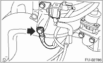
2. Remove the secondary air duct.
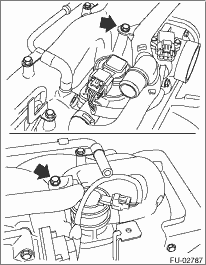
3. Remove the PCV pipe.
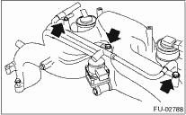
4. Remove the throttle body. 
5. Remove the EGR valve.
6. Remove the purge control solenoid valve.
7. Remove the secondary air combination valve.
8. Remove the fuel pipe protector LH.
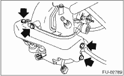
9. Remove the fuel pipe protector RH.
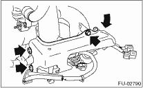
10. Remove the harness band (A) which holds the engine harness to the injector pipe.
11. Disconnect connector (B) from the fuel injector.
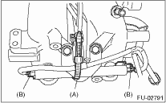
12. Remove the bolts which hold engine harness to intake manifold.
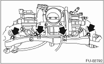
13. Remove the engine harness from intake manifold.
14. Remove the bolts which install injector pipe on the intake manifold as shown in the figure
• RH side
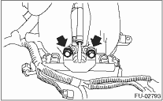
• LH side
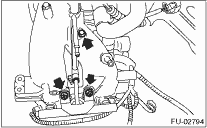
15. Remove the fuel injectors from injector pipe.
16. Loosen the clamp which holds the fuel injector pipe RH to the fuel pipe, then disconnect the pipe from the fuel hose.
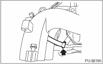
17. Loosen the clamp which holds the fuel injector pipe LH to the fuel pipe, then disconnect the pipe from the fuel hose.
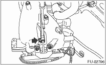
18. Remove the fuel injector pipe RH and LH.
19. Remove the bolts which install fuel pipes on intake manifold.
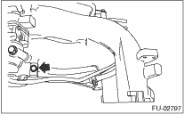
20. Remove the fuel pipe from intake manifold.